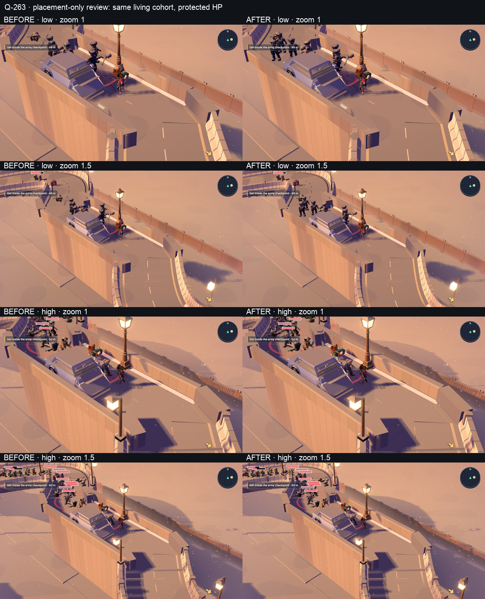

Q-262 · corpse beside tank

Baseline b98aaa604; candidate runtime 10891007a. All headless through the shared browser pool. Each raw frame is 1280 × 720. The protected L3 cohort is a placement probe, with health raised only after the normal tour reaches the ramp.


